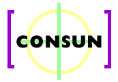

Objetivos:
- Incentivar a produção de software de
qualidade nas universidades.
- Criar mecanismos para divulgação de software desenvolvido
nas universidades.
- Criar oportunidades para a viabilização do desenvolvimento
de produtos comerciais, a partir de protótipos desenvolvidos na
universidade.
- Proporcionar mecanismos de premiação de talentos e
esforços envolvidos no desenvolvimento de software.
- Proporcionar oportunidade e incentivo para treinamento da capacidade
de estudantes na solução de problemas e desenvolvimento de
software em tempo limitado.
- Proporcionar mecanismos para premiação de habilidades e
treinamento na solução de problemas e desenvolvimento de
software em tempo limitado.
Público Alvo:
Alunos de graduação ou pós-graduação de
instituições de ensino superior brasileiras (veja
regulamentos para maiores detalhes).
Modalidades:
- Melhor software -
Regulamento
- Melhor Pacote de Multimídia -
Regulamento
- Período de Inscrição: de 15/09/96 a 04/10/96
- Período de Julgamento: de 07/10/96 a 08/11/96
- Resultado do Julgamento: de 15/11/96 a 20/11/96
- Premiaçao: dia 02/12/96 - No DCC-UFMG
- Melhor Time de Programação
Regulamento
- Período de Inscrição: 15/09/96 a 04/10/96
- Realizaçáo do Concurso: 28 e 29/11/96
- Resultado e Premiação: 02/12/96
Informações sobre a inscrição e regulamentos:
CONSUN96.
Comissão Organizadora:
- Claudionor José Nunes Coelho Jr - DCC/UFMG
- Carlos Camarão de Figueiredo - DCC/UFMG
- Nilton de Oliveira Júnior - Softex 2000
- Ricardo Dahab - IC/UNICAMP
- Rosângela Fernandes - CNPq
Organização
Patrocínio
Apoio